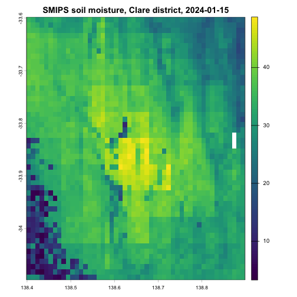

Bandwidth-safe spatial subsetting
Max Moldovan
Source:vignettes/bandwidth_safe_subsetting.Rmd
bandwidth_safe_subsetting.RmdThe TERN datasets that {nert} reads are national-extent rasters served as Cloud Optimised GeoTIFF (COG) files. Most analyses only need a small window of that extent, such as a paddock or a farm. This vignette shows how to work with {nert} so that only the window you need is actually queried rather than downloading the whole continent.
If you have not set up your TERN API key yet, see the nert vignette first.
COGs are lazy until you touch the values
A call to read_tern(), or any of the
read_*() wrappers, does not download the dataset. It
returns a SpatRaster that points at the remote COG, and
building that object only fetches the file’s metadata (its extent,
resolution, coordinate reference system and tiling). The pixel values
stay on the TERN server.
Data starts moving when you do something that needs the values,
calling plot(), writeRaster(),
values(), extract(), or using the raster in a
computation. The COG format lets you download only the data you actually
ask for, rather than the whole file, so the amount downloaded is decided
by what you request, not by the size of the dataset.
Look before you pull
The cell count of a lazy raster tells you what a careless call would
cost. Here is the Soil and Landscape Grid of Australia (SLGA) clay
content product, a static 90 m national grid. By default,
read_slga("CLY") returns the estimated value (EV) of clay
content (%) for the 0-5 cm depth layer.
The file behind this single layer is about 651 MB on the TERN server,
and if you need all of the raster values you will download essentially
the entire raster. Checking ncell() and dim()
on any freshly created raster is a cheap habit that will save you from
the expensive mistake.
Crop to an area of interest first
The bandwidth-safe pattern has two steps. Define your area of
interest as an extent, and crop() before you plot, extract
or compute.
Here is daily soil moisture from SMIPS for a single day, cropped to a block of cropping country around Clare in South Australia’s mid-north. The extent is given in longitude-latitude, which is what SMIPS and almost all other {nert} datasets use (more on the one exception below).
smips <- read_smips(date = "2024-01-15")
aoi <- ext(138.4, 138.9, -34.1, -33.6)
smips_clare <- crop(smips, aoi)
smips_clare
#> class : SpatRaster
#> size : 50, 50, 1 (nrow, ncol, nlyr)
#> resolution : 0.009997566, 0.009997122 (x, y)
#> extent : 138.3988, 138.8987, -34.09778, -33.59792 (xmin, xmax, ymin, ymax)
#> coord. ref. : lon/lat WGS 84 (EPSG:4326)
#> source(s) : memory
#> varname : smips_totalbucket_mm_20240115
#> name : smips_totalbucket_mm_20240115
#> min value : 3.287303
#> max value : 48.746872The crop is where the download happens, and it only fetches the tiles that intersect the area of interest. Compare the cell counts to see what stayed on the server.
ncell(smips)
#> [1] 14278140
ncell(smips_clare)
#> [1] 2500
round(ncell(smips) / ncell(smips_clare))
#> [1] 5711Plotting the cropped object is now a local, instant operation.
plot(smips_clare, main = "SMIPS soil moisture, Clare district, 2024-01-15")
plot of chunk smips-clare-plot
terra also offers window(), which restricts
a raster to an extent without creating a copy, and mask()
for non-rectangular boundaries such as a paddock polygon. Both compose
with the same pattern, narrow first, then touch the values.
Extracting at points is already bandwidth-safe
If you want values at sampling sites rather than a map, you do not
need to crop at all. extract() on the lazy raster reads
only the pixels under your points, and it accepts a two-column data
frame of longitude-latitude coordinates directly, there is no need to
build a spatial object first.
sites <- data.frame(
site = c("north", "home", "creek"),
lon = c(138.55, 138.62, 138.70),
lat = c(-33.75, -33.82, -33.95)
)
extract(clay, sites[, c("lon", "lat")])
#> ID CLY_000_005_EV_N_P_AU_TRN_N_20210902
#> 1 1 20
#> 2 2 17
#> 3 3 21This is the cheapest way to use the national grids in a field-trial or survey workflow, a handful of pixels crosses the network instead of a continent.
Mind the coordinate reference system
Every {nert} dataset is served in longitude-latitude except one. The canopy height composite uses the projected GDA94 Australian Albers system (EPSG:3577), with coordinates in metres rather than degrees.
canopy <- read_canopy_height()
crs(canopy, describe = TRUE)$code
#> [1] "3577"What this means in practice depends on the operation.
extract() converts for you, longitude-latitude points work
directly and terra prints a message that it is transforming them to the
raster’s system.
extract(canopy, sites[, c("lon", "lat")])
#> Warning: [extract] transforming vector data to the CRS of the raster
#> ID best_pick_files_bhLNnun
#> 1 1 0
#> 2 2 0
#> 3 3 0crop() does not convert. An extent in degrees does not
overlap an extent in metres, so cropping the canopy raster fails with a
non-overlapping extents error unless the area of interest is projected
first. project() re-expresses the same rectangle in the
raster’s own coordinate system.
aoi_albers <- project(vect(aoi, crs = "EPSG:4326"), crs(canopy))
canopy_clare <- crop(canopy, aoi_albers)
canopy_clare
#> class : SpatRaster
#> size : 1936, 1628, 1 (nrow, ncol, nlyr)
#> resolution : 30, 30 (x, y)
#> extent : 587393.3, 636233.3, -3738994, -3680914 (xmin, xmax, ymin, ymax)
#> coord. ref. : GDA94 / Australian Albers (EPSG:3577)
#> source(s) : memory
#> varname : best_pick_files_bhLNnun
#> name : best_pick_files_bhLNnun
#> min value : 0
#> max value : 61The canopy height composite is the only dataset where this step is needed. For everything else, extents in plain longitude-latitude are already in the raster’s system.
Save the crop, then work offline
For anything beyond a quick look, write the cropped raster to disk once and point the rest of your analysis at the local file. Repeated model runs then cost no bandwidth at all.
local_tif <- file.path(tempdir(), "smips_clare_2024-01-15.tif")
writeRaster(smips_clare, local_tif, overwrite = TRUE)
smips_local <- rast(local_tif)
smips_local
#> class : SpatRaster
#> size : 50, 50, 1 (nrow, ncol, nlyr)
#> resolution : 0.009997566, 0.009997122 (x, y)
#> extent : 138.3988, 138.8987, -34.09778, -33.59792 (xmin, xmax, ymin, ymax)
#> coord. ref. : lon/lat WGS 84 (EPSG:4326)
#> source : smips_clare_2024-01-15.tif
#> name : smips_totalbucket_mm_20240115
#> min value : 3.287303
#> max value : 48.746872